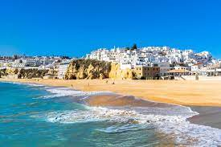

|
Albufeira, no litoral do Algarve, destaca-se como uma pérola costeira de Portugal. Com suas praias deslumbrantes, como a Praia da Oura e a Praia dos Pescadores, oferece areias douradas e águas cristalinas. O centro histórico, conhecido como "Aldeia Velha", cativa com suas ruas estreitas e casas caiadas de branco, enquanto a Praça da República convida a explorar a gastronomia local.
À noite, a vida ganha vida na famosa "Strip", repleta de bares e discotecas, proporcionando uma animada experiência noturna. A Marina de Albufeira, com iates e cafés à beira-mar, oferece uma atmosfera encantadora. Eventos como o Carnaval e as celebrações de São João trazem alegria e animação à cidade.
A culinária algarvia é uma atração por si só, com restaurantes que oferecem peixe fresco, cataplana e iguarias regionais. As esplanadas à beira-mar são locais ideais para degustar essas delícias enquanto se desfruta das vistas panorâmicas. |
 |